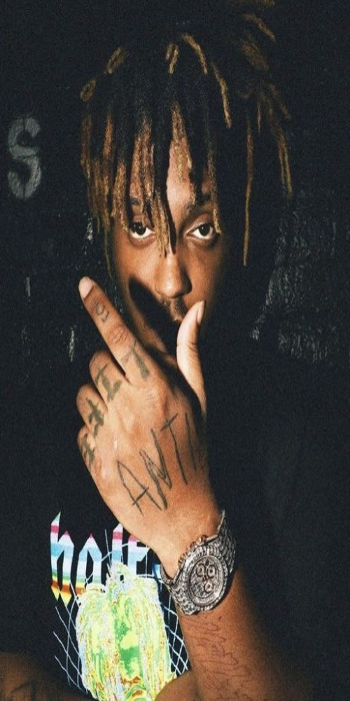

Title

rapとはHIP HOPにおける三大要素の一つである。
メロディをあまり必要とせず、似た言葉や語尾が同じ言葉を繰り返す、韻（ライム）を踏むのが特徴的で、口語に近い抑揚をつけて発声する。
ラップは様々な種類があり、時代とともにそのスタイルも多岐にわたる。そして今、最も勢いのあるラップとしては「エモラップ」が挙げられるだろう。
エモラップ（emotional rap）とは、往来のラップのスタイルよりもより繊細な心情をリリックにし、厭世感や内省的な感情をラップするものである。日本ではしばしば「鬱ラップ」と形容されることもある。歌詞は鬱、孤独、不安、薬物乱用、ニヒリズム、自殺、傷心などに焦点をあてることが多い。
私はこのエモラップが好きです。よりラッパーの心情がストレートに且つ生々しい表現で感じることができるからです。また、ただ単にネガティブな表現をするのではなくその根底にはマイナスからプラスに変えるという本来のHIPHOPのあるべき姿が残っているところが何よりも好きです。
今回はおすすめのラッパーを三人、紹介します。